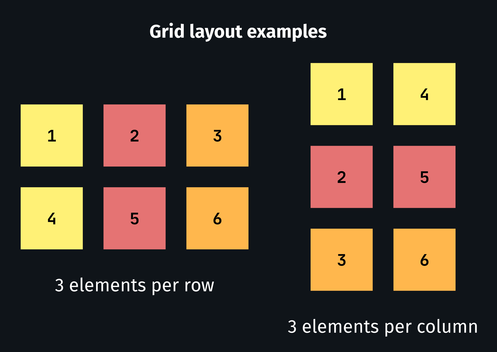
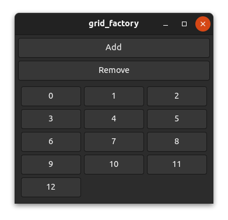
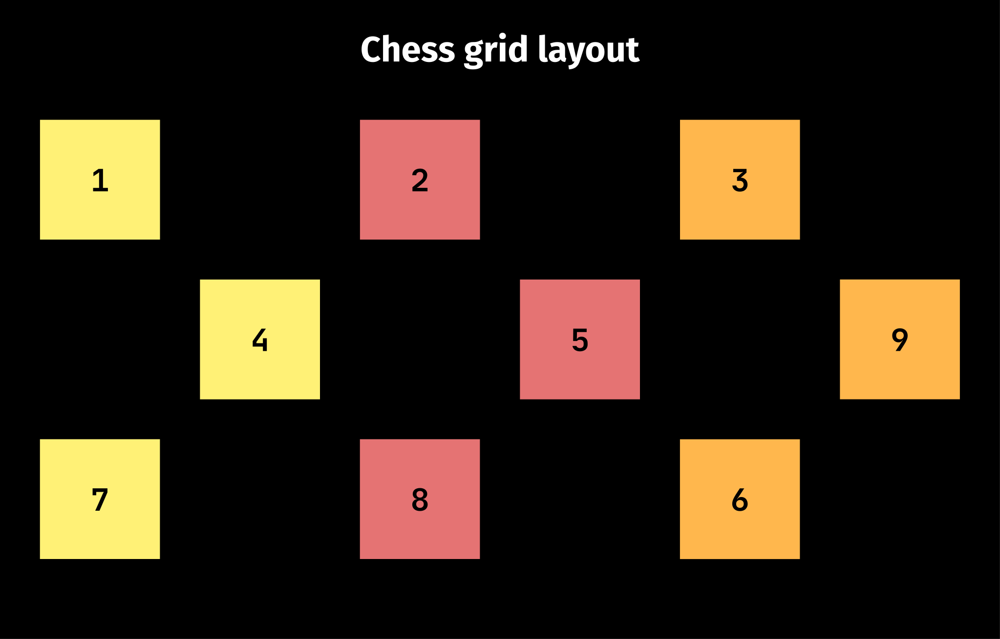
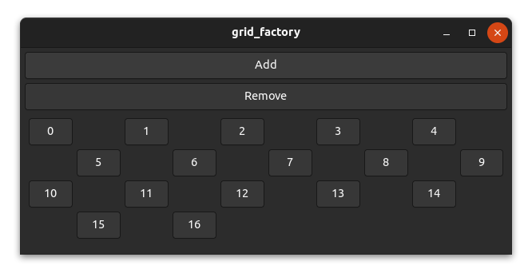

The position function
Most widgets such as gtk::Box don't use the position function because they are one-dimensional and place widgets relative to each other. However, a few widgets such as gtk::Grid use fixed positions and need the position function to work inside a factory.
The task of the position function is mainly to map the index to a certain position/area (x, y, width and height) of a factory widget within the parent widget (view).
The code we will use in this chapter is based on the grid_factory example here. Run
cargo run --example grid_factoryfrom the example directory if you want to see the code in action.
How it works
Let's take a grid as an example. For a grid, there are many possibilities to place your widgets. You can, for example, place three, four or five widgets per row or you could place a certain amount of widgets per column. You can even create patterns like a chess grid if you want to.
However, we want to use a factory for generating our widgets, which means we only have the index to calculate the desired two-dimensional position. In the simplest case, we create a layout that places a certain amount of widgets per row or per column.

To place three elements per row from left to right in a gtk::Grid we could use the following position function.
fn position(&self, index: &usize) -> GridPosition {
let index = *index as i32;
let row = index / 3;
let column = index % 3;
GridPosition {
column,
row,
width: 1,
height: 1,
}
}And indeed, it works as expected.

A chess grid
Let's have a look at a more complex layout. It's unlikely that this would be used in a real application, but it's still interesting to have a look at it.
To create a chess grid layout, we need to place our widgets only on fields of one color and leave the other fields empty.

Actually, the code isn't too complicated.
fn position(&self, index: &usize) -> GridPosition {
let index = *index as i32;
// add a new row for every 5 elements
let row = index / 5;
// use every second column and move columns in uneven rows by 1
let column = (index % 5) * 2 + row % 2;
GridPosition {
column,
row,
width: 1,
height: 1,
}
}And as you can see, it works!
